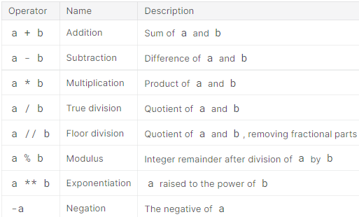
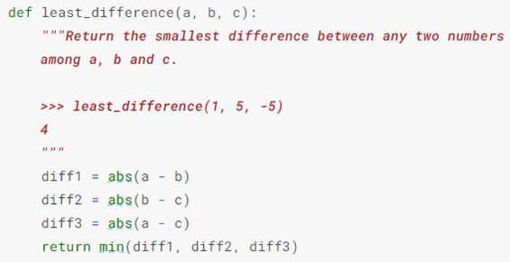
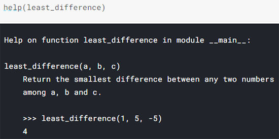
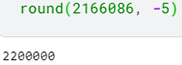
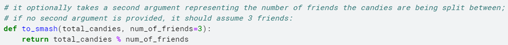

Kaggle
The docstring is a triple-quoted string (which may span multiple lines) that comes immediately after the header of a function. When we call help() on a function, it shows the docstring:
The last two lines of the docstring are an example function call and result. (The >>> is a reference to the command prompt used in Python interactive shells.) Python doesn't run the example call - it's just there for the benefit of the reader. The convention of including 1 or more example calls in a function's docstring is far from universally observed, but it can be very effective at helping someone understand your function.
Without a return statement, least_difference is completely pointless, but a function with side effects may do something useful without returning anything (print() and help() don't return anything).
I'm safe from today's weather if...
I have an umbrella...
or if the rain isn't too heavy and I have a hood...
otherwise, I'm still fine unless it's raining and it's a workday.